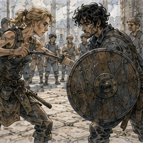

Pessa made me hold the shield.
That was the entire first exercise.
I objected immediately.
“Good,” she said.
“That was not agreement.”
“I know.”
We were not in the main training yard.
That mattered.
The narrow strip behind the storage shed had packed dirt, a wall on one side, stacked barrels on the other, and exactly enough room for one person to fail without involving six other people.
Alden had been denied entry.
He had attempted to argue that observation improved training.
Pessa had told him to go train.
He had gone.
Mostly because she pointed.
I stood with both crutches planted.
Pessa held the round practice shield by its rim.
“Which hand?”
“Right.”
“Why?”
“Sword hand.”
“You have a sword?”
“No.”
“Today?”
“No.”
“Then why right?”
I looked at the shield.
Habit.
That was the answer.
Also stronger shoulder.
Also old architecture.
Also because if I put it in the left hand I lost the crutch on that side and my right hand became responsible for both support and everything else.
Maybe.
“I don't know.”
“Good.”
She gave it to my left hand.
I nearly dropped my crutch.
Not the shield.
Worse.
I caught the crutch against my hip.
Pessa waited.
I rearranged.
Right hand on right crutch.
Left hand through shield strap.
Left crutch leaned against wall.

Standing on one leg with one crutch and a shield felt less like standing and more like being temporarily balanced between arguments.
The shield pulled forward.
My right hand pressed harder into the crutch.
My right shoulder rose.
My left knee bent as if the absent foot could find ground.
Nothing happened.
Except everything.
“Hold.”
“I am.”
“Don't fix.”
“I have to fix.”
“Enough not to fall.”
“That is fixing.”
“Fine. Don't improve.”
I hated her.
I held.
Five seconds.
Ten.
Right calf working.
Ankle adjusting.
Hip tight.
My trunk rotated slightly right around the crutch.
The shield drifted inward because letting it stay outside my base felt stupid.
Pessa touched the rim.
“Why there?”
“Closer to center.”
“Why?”
“Less torque.”
“Human answer.”
“Feels safer.”
“Better.”
She took the shield.
I exhaled.
“How long?”
“Eleven seconds.”
“That was longer than eleven.”
“Felt longer.”
“Cruel.”
She handed it back.
Right hand this time.
Left crutch remained.
Right crutch against wall.
Different.
Immediately.
The shield's weight sat on the same side as my intact leg.
That should have helped.
It did not.
My left hand on the crutch crossed slightly inward because I wanted support under the center of me, but the shield occupied space at the right side of my chest and changed where I wanted that center to be.
I straightened.
Bad.
My body corrected too far.
Pessa caught the top edge of the shield.
Not me.
Good.
“Again.”
“I did not fall.”
“You were leaving.”
“I was standing still.”
“Your chest was leaving.”
I reset.
This time I let my torso angle.
Ugly.
Stable.
“Better,” she said.
“I look ridiculous.”
“That wasn't the question.”
“What is the question?”
“What changes?”
“Everything.”
“Name one.”
“Crutch position.”
“Good.”
“Shield position.”
“That is two.”
“Right ankle.”
“Three.”
“Hip.”
“Four.”
“Left knee keeps trying to participate in a support pattern it cannot complete.”
Pessa looked down at it.
“That's useful.”
“I know.”
“Don't sound pleased.”
“I am pleased.”
“Why?”
“Because it is specific.”
She took the shield.
I sat on an overturned crate.
Not because I needed to.
Because she pointed at it.
My hands were already warm from the crutches.
Not bad.
The right palm had the familiar pressure line.
I flexed the fingers.
Pessa set the shield on the dirt.
“What hurts?”
“Nothing.”
“What is tired?”
“Right calf. Hip. Hands a little.”
“Shoulder?”
“Fine.”
“Residual limb?”
“Nothing unusual.”
“Phantom?”
“Left foot felt planted twice.”
“Pain?”
“No.”
“Good.”
She waited.
I waited.
This was the new part.
Old me would have filled the silence.
Current me wanted to.
Still.
“Now what?” I asked.
“Now seated.”
I looked at the crate.
“No.”
Pessa looked at me.
“I can hold a shield seated.”
“I know.”
“Then why no?”
“Because if we start seated, you'll decide seated is the answer.”
I stared.
“That is speculative.”
“That is you.”
Fair.
She pointed at my crutches.
“Both.”
I stood again.
Two crutches.
No shield.
Easy.
Not easy.
Ordinary now.
There was a difference.
Pessa walked around me once.
“Move the right crutch six inches out.”
I did.
“More.”
I did.
“Now left.”
I moved it.
Wider base.
Stable.
“Shield?”
“No.”
“Why?”
“Because you're already changing one thing.”
I smiled.
She did not.
Possibly a little.
No.
We spent ten minutes moving crutches.
That was training.
I hated it.
Right closer.
Left farther.
Both forward.
One forward, one back.
Square.
Turned.
Each position changed how much room existed for the shield I was not holding.
Some gave stability and trapped my hands.
Some opened one side and made the other useless.
Some felt safe until I tried to look over my shoulder.
Pessa made me turn my head.
My balance changed.
I swore.
“Again.”
We repeated it.
Then she gave me the shield.
Left hand.
Right crutch.
No movement.
Hold.
Then right hand.
Left crutch.
Hold.
Then she made me look left.
Then right.
Then up.
“Why up?”
“Things are sometimes up.”
“That is deeply wise.”
“Again.”
Looking up moved the world more than it should have.
Not much.
Enough.
My right ankle corrected.
Shield shifted.
Crutch hand tightened.
“Again.”
The boring discoveries accumulated.
Shield on right felt better for weight.
Shield on left sometimes felt better for space.
One crutch was not one solution.
The useful side depended on shield side, direction I needed to look, where the wall was, and whether the crutch tip had room.
This was not architecture.
This was inventory.
I could feel myself trying to make architecture anyway.
Pessa saw it.
“Don't.”
“I didn't say anything.”
“Your eyebrows did.”
“Everyone has become intolerable.”
“Good.”
She picked up a padded stick.
I looked at it.
“No.”
“What?”
“You're not hitting me.”
“I know.”
“Then why do you have that?”
“To give you something to look at.”
She stood three steps away.
Shield in my right hand.
Left crutch planted.
“Where's the stick?”
“Your left.”
She moved it.
“Now?”
“Right.”
Again.
Up.
Low.
Behind her hip.
I tracked it.
Then she stepped sideways.
My body wanted to turn.
I turned.
Bad.
Crutch tip dragged.
Shield opened.
Right foot hopped half an inch.
Pessa froze.
I froze.
No fall.
My heart hit once hard.
“Sit.”
“I am fine.”
“Sit.”
I sat.
She put down the stick.
“What happened?”
“I turned.”
“No.”
“I rotated too far.”
“No.”
I looked at the dirt.
The drag mark from the crutch tip.
“I moved the crutch after my body.”
“Yes.”
“Old sequence.”
“Maybe.”
“Probably.”
“Maybe.”
Fine.
She waited.
I thought.
Not theory.
Event.
“I saw you move. I turned trunk first. Right foot tried to pivot. Left side expected support. It wasn't there. Then I moved the crutch late.”
“Good.”
“Shield followed trunk and opened.”
“Yes.”
“So the problem is sequencing.”
Pessa's face changed.
I stopped.
“Maybe the problem is sequencing.”
“Better.”
I looked at the drag mark again.
A stupid little line in dirt.
Useful.
Not answer.
We rested longer that time.
My residual limb had begun to feel warm.
Not wound-hot.
Work-warm.
Pressure higher in the socketless wrapping from the way the thigh muscles kept trying to participate.
I told Pessa.
She nodded.
“Done standing.”
“That was fifteen minutes.”
“Good.”
“I can do more.”
“I know.”
“Then?”
“Tomorrow exists.”
I disliked this philosophy.
She brought over a proper chair.
Not mine.
Ordinary straight-backed yard chair.
I sat.
“Now shield.”
I took it.
Right hand.
No crutch required to remain upright.
Immediate relief.
Also different problem.
My right foot planted.
Left thigh supported by the seat.
Shield weight traveled into shoulder and trunk instead of into the one-handed balance arrangement.
Pessa gave me the padded stick.
“What?”
“Touch the shield.”
I did.
“Again.”
I touched it in a different place.
“Again.”
This became almost insulting.
Top edge.
Left edge.
Center.
Low.
Back.
She changed the angle.
I followed.
Then she held the stick still and said, “Push.”
I pushed against it with the shield.
My chair slid backward.
One inch.
I laughed.
Pessa did not.
“Again.”
I planted my right foot harder.
Push.
Chair stayed.
My trunk twisted.
“Again.”
I moved the chair against the wall.
Pessa stared.
“What?”
“Why?”
“So it doesn't slide.”
“Then you learn wall.”
“Yes.”
“Is wall always there?”
“No.”
“Move it back.”
I moved it.
Annoying woman.
We tried again.
Different foot position.
Different seat depth.
Shield higher.
Lower.
Closer.
Farther.
The chair moved twice.
I almost tipped it once when I reached too far left.
Not as far as the throwing game.
I caught it earlier.
Pessa stopped.
“What did you do?”
“Reached past what I had.”
She looked at me.
I looked at her.
“That was your line.”
“I know.”
“I learned it.”
“Apparently.”
Good.
We continued.
No attacks.
No Alden.
No sword.
No Barrier.
No clever solution.
At the end of almost an hour, I had learned that holding a shield was difficult.
This was humiliatingly valuable.
Pessa sat on the crate.
I stayed in the chair.
“What do you think?” I asked.
“That you're weak.”
I stared.
She shrugged.
“You haven't trained properly in weeks. Right leg is doing too much. Hands are doing too much. Trunk is doing different work. You get tired.”
“That is not novel.”
“No.”
“What else?”
“You keep trying to make missing support with your left side.”
“I know.”
“Sometimes that matters. Sometimes it doesn't.”
“Explain.”
“No.”
“Why?”
“Because I don't know yet.”
Good.
I smiled.
She looked suspicious.
“What?”
“Nothing.”
“Greg.”
“I like that you don't know.”
“That is insulting.”
“No. It means this is real.”
Pessa considered that.
Then nodded.
“Come tomorrow.”
“For what?”
“Same thing.”
I groaned.
“Maybe add movement.”
My head came up.
She pointed.
“Maybe.”
“Maybe means maybe.”
“Hessa?”
“Yes.”
“She talks too much.”
I laughed.
Pessa stood.
“Tomorrow. If the leg isn't more swollen tonight.”
“Residual limb.”
“Leg.”
“There is less of it.”
“Still leg.”
Fair.
“And if the hands are fine,” she said.
“Fine.”
“And no magic.”
“I know.”
“I don't care what Hessa does.”
“That sounds rude.”
“I care what I do.”
Different jurisdiction.
I did not say it.
Personal record.
I stood with both crutches.
The shield stayed on the ground.
For a moment I wanted to pick it up on the way out.
Not to train.
Just to feel the weight again.
I did not.
Tomorrow existed.
Apparently.